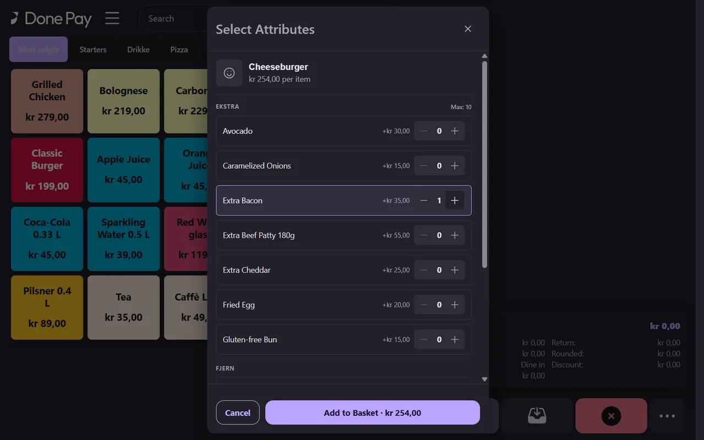
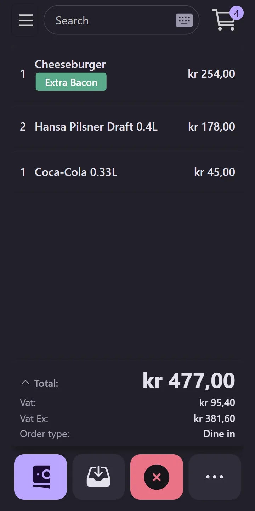
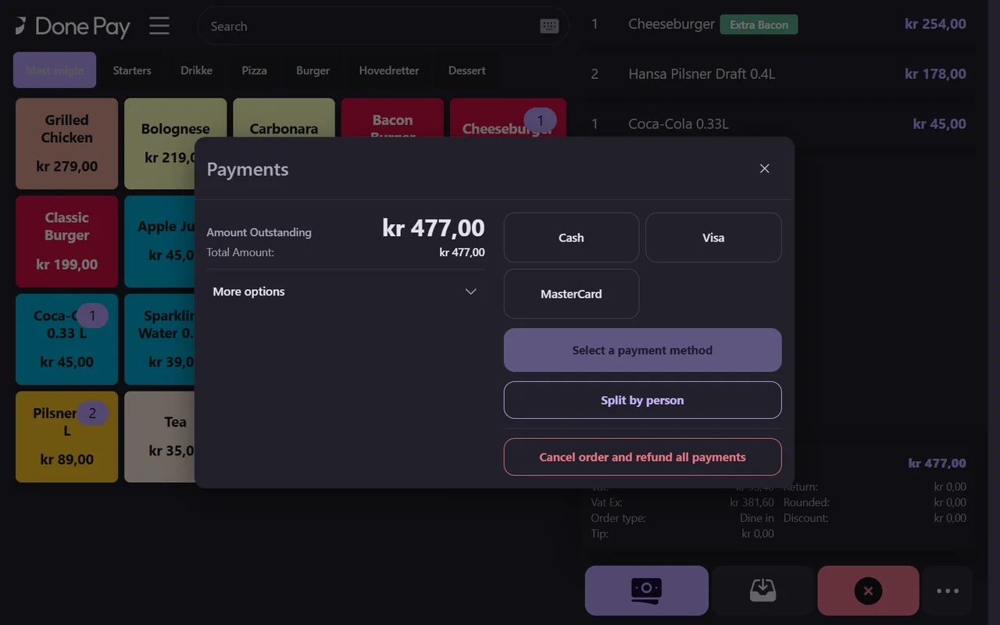
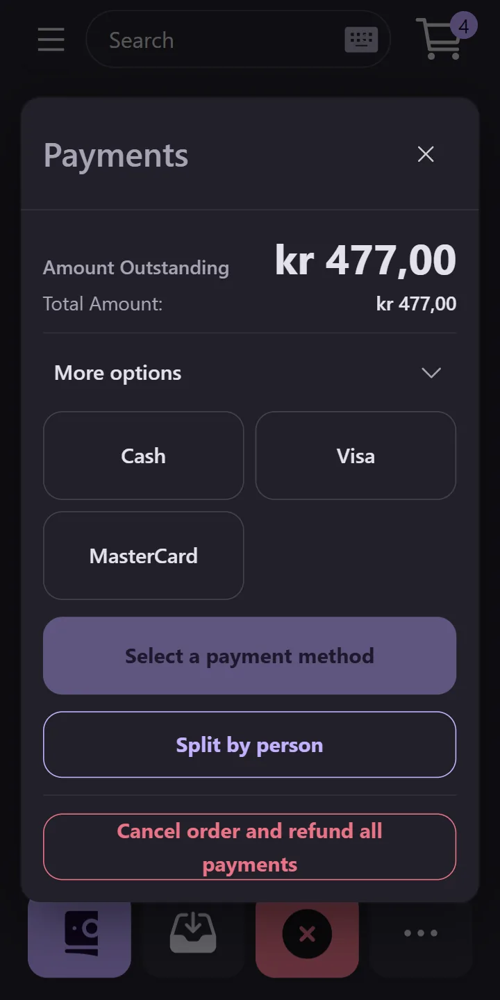
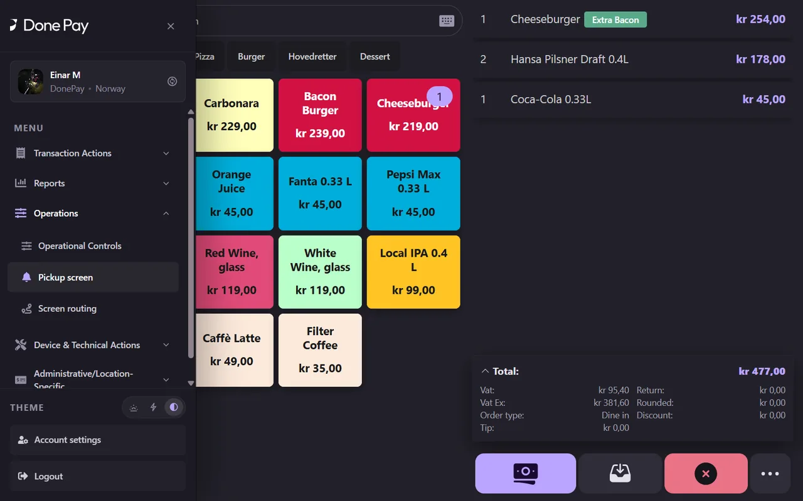
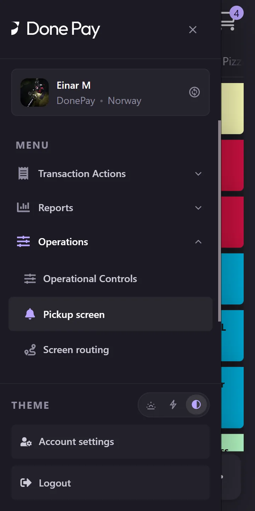

Done for arenas
The till that runs match day – on the counter and in your hand.
The Done till runs on PCs in the kiosks and right in the payment terminal. It sells, takes payment, hands out QR orders with a pickup QR and runs match day. Fans who order from their seat end up in the same till, the same stock and the same settlement.
Tills, QR kiosks and the main warehouse are run from one place – for one kiosk or a whole arena.
Match day in Done
- The till on PC and tabletA fast sales screen in the kiosks.
- The till in the terminalSell and take cards in one device.
- Hand-out with a pickup QRScan the fan’s code right at the till.
- QR ordering per kioskOrder from the seat, collect without queuing.
- Match-day controlKiosks open and close with the match.
- Stock and settlementMain warehouse, Stop-% and safe settlement.
The till – on PC and in the terminal
One till for the whole arena – on the counter and in your hand
The Done till runs on PCs and tablets in the kiosks and right in the payment terminal for staff on the move. The same menu, the same prices and the same settlement – and the till also hands out QR orders and runs match day.
-
Step 1 of 6
A sale in seconds
Large, colour-coded tiles with the best sellers first mean a match-day sale takes a few taps. The basket, VAT and total update straight away.
- Tiles in the item group’s colour
- Best sellers first
- Search and item groups at the top
-
Step 2 of 6
Add-ons and options without detours
Items with add-ons open an options sheet with a price per option. The basket shows the choice on the line, so the kitchen and the guest see the same thing.
- Extra and remove in one place
- A price per option
- The choice is shown on the order line


-
Step 3 of 6
Pay at the till or in the terminal
The payment window shows the amount due and the payment methods the till is set up with. In the terminal, the card is taken in the same device.
- Card in the terminal
- Split the bill per person
- Payment methods per till


-
Step 4 of 6
Match day is run from the till
From the till menu, the supervisor opens operational controls, the pickup screen, screen routing and event monitoring – without going to admin.
- Operational controls and pickup screen
- Event monitoring
- The same menu on PC and terminal


-
Step 5 of 6
Pause a kiosk or add lead time
Operational controls show every kiosk with its status. The supervisor can pause a kiosk, add extra lead time or stop all orders with one tap.
- Status for every kiosk
- Extra lead time per kiosk
- An emergency stop for the whole arena

-
Step 6 of 6
Event monitoring at the till
Event monitoring shows the event in real time: status, runtime, confirmed opening stock and the stock per item – read-only, so nobody changes anything by accident.
- Status and runtime
- Stock per item
- Read-only

Simulation
Hand-out with a pickup QR – right at the till
The fan shows the pickup QR from the confirmation. The till scans it, shows the order and confirms the hand-out – without leaving the sales screen.
A simulation of the fan’s phone and the till’s screen. Names and figures are examples.
The tills at the kiosks
New tills in minutes
The tills sell for the same kiosk as the QR code, and a new till or terminal is set up without technical help.
Card only
The tills at the kiosks can be set to card payments only, as most arenas want.
A new till with a QR code
A till is set up by scanning the QR code from a device template and choosing which kiosk it sells for.
Move it mid-match
A till can be moved to another kiosk during the event. Its sales are settled on the kiosk it came from.

Simulation
Move a till to another kiosk – mid-match
When one kiosk has a queue, a till can be moved there in seconds. The staff member scans the device template’s QR code and picks the new kiosk, and the sales the till has already taken are settled on the old kiosk.
A simulation of the till’s screens. Names, figures and times are examples.
A QR code per kiosk
One QR code per kiosk – and one at the entrance
Every kiosk in the arena gets its own QR code with your logo. A shared QR code at the entrance lets fans pick the kiosk closest to their seat.
-
Step 1 of 2
Fans pick the kiosk themselves
The shared QR code opens a page with every kiosk. Open kiosks can be chosen, and closed ones are clearly marked.
- You decide the order and the guidance
- One code to put up, however many kiosks you have
- Changed in admin without new QR codes


-
Step 2 of 2
A QR code for every kiosk
The QR code at a kiosk goes straight to that kiosk’s menu. The code is downloaded with your logo from admin.
- Its own welcome text and closed message
- Logo, cover image and theme per kiosk


The fan’s order
Order from the seat – collect without queuing
Fans order on their own phone, with no app. The order goes straight to the right kiosk, and the fan collects it when the number is shown.
-
Step 1 of 4
The kiosk’s menu
Fans only see what the kiosk sells, sorted into categories with photos and prices.
- The same menu can be used at every kiosk
- Sold-out items are marked automatically

-
Step 2 of 4
Make it their own
Fans remove ingredients and add extras, and the price updates straight away.
- Remove and extra, with a price per add-on

-
Step 3 of 4
An overview before paying
The whole order with its options and the total, before the fan pays.
- Change quantities or remove items
- The fan can cancel

-
Step 4 of 4
Mobile number, payment and pickup number
The fan enters a mobile number and pays by card in the browser. The confirmation shows the pickup number and a pickup QR code.
- Order confirmation by SMS
- The pickup number is on the confirmation
- The pickup QR can be scanned at the till

Match-day control
Kiosks open and close with the match
Each kiosk is a device group with its own event. When the event starts, the kiosk opens for sales. Before and after, fans see your own closed message.
-
Step 1 of 4
Every kiosk is a group
In the group you decide which devices and items belong to the kiosk.
- QR code and tills in the same group
- The items the kiosk sells, with stock
- Stop-% per kiosk

-
Step 2 of 4
Start with opening stock
When the event starts, you confirm the opening stock the kiosk takes from the main warehouse.
- The main warehouse stock is shown for every item
- An optional SMS alert when stock runs low

-
Step 3 of 4
The kiosk takes orders
The kiosk opens for sales, and the landing page shows it as open. The other kiosks stay closed.
- Kiosks open and close one by one
- Stock is tracked in real time


-
Step 4 of 4
Closed before and after
Without an active event, the kiosk shows the closed message you wrote instead of the menu.
- Your own text per kiosk
- No orders outside the event


Stock
The right item at the right kiosk
Goods are received into the main warehouse and shared out to the kiosks when the event starts. During the match you can move goods between kiosks and count them.
-
Step 1 of 4
Goods receipt in the main warehouse
Goods receipts are registered with the supplier and the delivery note. The main warehouse shows what is free and what has been allocated.
- Pieces or packages, such as cases
- A history of goods receipts

-
Step 2 of 4
Move goods during the match
When a kiosk runs low, you move goods from the main warehouse or another kiosk – with a reason.
- From the main warehouse or between kiosks
- A reason on every transfer

-
Step 3 of 4
Stock counts during the event
During a count the kiosk is locked briefly, and the system shows the difference between the system stock and the real stock.
- Locks sales while you count
- Count history per event

-
Step 4 of 4
Sold out before it runs out
Stop-% stops an item selling on QR before it runs out completely. Fans see the item as sold out.
- A threshold per kiosk
- The kiosk’s status is shown in monitoring


During the match
The whole arena on one screen
Live monitoring shows every kiosk at once: sales, orders, pace and stock status.
-
Step 1 of 1
Status for every kiosk
The top shows the whole event, and the cards below show each kiosk.
- Revenue split between till and QR
- Number of orders and pace
- Stop-% status per kiosk

The order overview
Staff see QR orders in the order overview and on the kitchen screen, together with the sales from the tills.
The pickup screen
When the order is ready, the pickup number is shown on the screen at the kiosk.
One sale, one settlement
Sales from the tills and QR orders end up in the same order overview, stock and settlement per kiosk.
After the match
Closed, settled and locked
When the match is over, you close the event per kiosk. The system settles the tills and locks the event.
-
Step 1 of 2
Close the kiosk
Closing is confirmed before it runs, and it cannot be undone.
- One kiosk at a time

-
Step 2 of 2
Settlement and closing stock
New sales are stopped, the tills in the group are settled automatically, and the closing stock is saved.
- Automatic settlement for the tills in the group
- Closing stock saved for every item
- End of day and reports per kiosk

Try it
Scan and see how it feels
These are the QR codes from our demo arena. The kiosks are only open while a demo event is running – otherwise you see the closed message.
The demo shows the whole flow up to payment. Payment is not enabled, so no card is charged. The guest pages open in Norwegian, and English can be chosen on the page.
 Shared QR codeChoose a kiosk
Shared QR codeChoose a kiosk Kiosk NordQR code
Kiosk NordQR code Kiosk SørQR code
Kiosk SørQR code Kiosk ØstQR code
Kiosk ØstQR code Kiosk VestQR code
Kiosk VestQR code
Want to see Done at your arena?
We set up a demo with your kiosks, your tills and terminals and your menu, and show you what match day looks like for you.